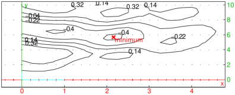

16.3.4 Solving general nonlinear programming problems
The nlpsolve
command computes the optimum of a multivariate objective function subject
to equality and/or inequality constraints with continuous and/or integer variables.
-
nlpsolve takes the following arguments:
-
obj or fname, an expression to optimize or
a string containing the path to a problem file.
- Optionally, constr, a list of equality and
inequality constraints. Double-bounded constraints in form
a≤ f(x)≤ b can be entered as f(x)=a..b instead
of two inequalities.
- Optionally, bd, a sequence of variable boundaries
x=a..b where a∈ℝ∪{−∞} and
b∈ℝ∪{+∞}, b≥ a.
If several variables have the same upper and lower
bounds, one can enter [x,y,...]=a..b. If the
bounds are stored in a two-column matrix, consider using the conversion
routine box_constraints (see Section 6.6.9).
- Optionally, opt, a sequence of options in which each
option may be one of:
-
maximize=bool or
nlp_maximize=bool,
where bool can be true or false.
Just maximize or nlp_maximize
is equivalent to maximize=true. (By default,
maximize=false, i.e. the objective is minimized.)
-
nlp_initialpoint=pt, where pt
is a starting point for the solver or a list of starting points,
each of which is given in the form [x=x0,y=y0,…].
Alternatively, pt may be an initial search rectangle specified by
[x=xmin..xmax,y=ymin..ymax,…]
which serves as a frame for automatic generation of starting points.
-
nlp_method=meth, which is a string or a list specifying the method
of optimization. Available methods are:
-
nelder-mead or nm, the simplex method of Nelder and Mead,
modified so that it can handle variable bounds and (in)equality constraints;
see Luersen, Riche, and Guyon (2003).
- differential-evolution or de, the method of differential evolution,
modified so it can handle bounds, (in)equalities and integrality constraints;
see Lampinen and Zelinka (2000).
- interior-point or ipt, the interior-point method which requires
the objective and constraint derivatives, and can handle (mixed) integer nonlinear problems.
If GSL routines are available, then unconstrained problems are solved by
BGFS method which is faster.
- cobyla or cbl, the (derivative-free) COBYLA algorithm.
Note that these names must be entered with double quotes, i.e. as strings. Some parameters
can be set for individual methods; to do so, meth should be a list in which the
leading element is the method specification, followed by one or more entries of the form
"param"=value, where param can be one of the following
(see below for detailed explanations on values):
-
cross-probability, which specifies the probability of mutation in differential
evolution, where value=p∈⟨ 0,1⟩ (by default, p=0.5).
- scale, which specifies the scaling factor for differential evolution (by default,
it is computed automatically from cross-probability by using the formula of Zaharie (2002)).
- reflect-ratio, which specifies the simplex reflection factor in Nelder-Mead
method (by default 1).
- expand-ratio, which specifies the simplex expansion factor in Nelder-Mead
method (by default 2).
- contract-ratio, which specifies the simplex contraction factor in Nelder-Mead
method (by default 0.5).
- shrink-ratio, which specifies the simplex shrinking factor in Nelder-Mead
method (by default 0.5).
- size, which specifies the initial simplex size for Nelder-Mead method (by default, it is computed automatically by using the variable bounds).
- step, which specifies initial step for BGFS method or adaptive penalty step for
Nelder-Mead method (by default, it is set to 1 for BGFS and to 0.01 for Nelder-Mead).
- search-points, which specifies the number of agents in differential evolution
(by default 10n, where n is the number of variables) or the number of points for determining
PDH clusters (by default 1000√n).
- postprocess, which specifies whether the result obtained by differential evolution or
Nelder-Mead method should be refined by a local method, where value is a boolean value
(by default, value=true).
The optimization method is determined automatically if meth is not set (see below).
-
nlp_precision=ε for some ε>0, which
sets the optimality tolerance for the solver (by default, ε=epsilon()2/3).
-
nlp_tolerance=δ for some δ>0,
which sets the feasibility tolerance for the solver (by default, δ=10−5).
-
nlp_presolve=bool, where bool can be
either true or false. This option enables/disables the
preprocessing step which attempts to reduce the number of decision
variables by solving subsets of equality constraints which are all linear
in certain subsets of variables, substituting the results, and
repeating the process until no further reduction can be made.
(In particular, fixed variables are removed.)
After solving the presolved problem, the removed variables
are substituted back to the solution.
(By default, nlp_presolve=true.)
- border=bool, where bool is a boolean value.
This enables or disables finding variable bounds automatically. (By default,
border=true.)
-
nlp_integervariables=lst, where lst
is a list of problem variables that are supposed to take integral values (empty by default).
-
nlp_binaryvariables=lst, where lst
is a list of problem variables that are supposed to take binary (0-1)
values (empty by default).
-
nlp_iterationlimit=N for a positive integer N, which sets the
maximum number of iterations allowed for the solver (by default, N=250).
-
nlp_verbose=v, where v is an integer specifying the verbosity level:
0 – no messages, 1 – only errors, 2 – errors and warnings, 3 – all messages (by default, v=1).
- cluster=k or bool, where k≥ 2 is an integer and bool is
either true or false, which specifies
whether the initial points should be determined by k-means clustering a large number of random points
at which the objective Hessian is positive definite (this works only if the interior-point
method is used), called PDH (Positive Definite Hessian) points.
The number of generated points can be specified by setting the
search-points parameter. If cluster=true, the number of clusters is determined
automatically using the Hartigan criterion. If k is set, then k clusters are generated.
Cluster centers are subsequently used as the initial points. (By default, cluster=false.)
- convex or convex=bool,
where bool can be either true or false.
This specifies whether the input problem should be treated as being convex.
If this option is set, then the convexity check is not performed, speeding up the execution.
(By default, convexity check is performed only if it is relevant for
choosing a suitable optimization method.)
- assume=asmp, where asmp may be one
of the following:
-
nlp_nonnegative, which restricts all variables to
nonnegative values (existing positive lower bounds are kept, however),
-
nlp_nonnegint or nonnegint, which makes
all variables take nonnegative integer values,
-
nlp_integer or integer, which forces
all variables to take integer values,
-
nlp_binary, which forces all variables to take
0-1 values.
- nlpsolve(obj ⟨,constr,bd,opt ⟩)
returns a list [optobj,optdec], where optobj
is the optimal value of obj and optdec
is a list of of optimal values of the decision variables. If the optimization
fails, then optobj is the error message and optdec is
the last point on the path the solver takes in attempt to find the
optimal objective value. If the problem is infeasible or if the solver fails
to find a feasible point, then an error is returned.
- nlpsolve(fname ⟨,opt ⟩)
solves the problem written in the file pointed to by fname, which must be
written in the AMPL modeling language (file extension .mod).
nlpsolve contains a very basic parser for such files and is able to read
problem variables, objective and constraints (this works with problems from
MINLPLib).
Solver parameters can be specified in opt.
Automatic selection of the optimization method.
If objective and constraints are twice differentiable, then interior-point method is used.
If no initial point is provided and there are only box constraints, then differential evolution
is applied first to find a good starting point. In the non-differentiable case, nlpsolve
applies the Nelder-Mead method and switches to differential evolution in the case of failure.
In case of integrality constraints, as well as in the case of a box-constrained problem without
additional constraints and initial point(s), differential evolution is selected.
Linear problems are solved by the lpsolve command,
while univariate optimization on a segment is performed by using Brent’s algorithm.
Local vs. global optimization.
When an initial point is provided, nlpsolve acts like a local optimizer.
Without initial point(s), it uses a multistart technique in attempt to
find the global minimum: starting points are automatically generated by using
the probabilistic restart technique described by Luersen, Riche, and Guyon (2003) until the
maximum number of iterations is reached. This technique avoids previously generated points
and also the points of convergence, while keeping relatively close to them; thus, the search
space is examined in a probabilistic but systematic way. An exception is the method of
differential evolution, which is a “global” method by design (however not a true one);
the initial population is generated uniformly if the search space is compact.
Automatic detection of variable bounds.
If the constraint derivatives are available, nlpsolve determines rough bounds
of the decision variables, and is thus able to detect whether the search domain is compact.
In particular, this information is used by the probabilistic restart technique.
(Mixed) integer optimization.
When integrality constraints are provided, nlpsolve applies a suitable method for finding
integer-feasible solutions. For differentiable input, the branch&bound method is used, unless
the problem is convex, in which case the outer-approximation method is used. In the non-differentiable
case, differential evolution is applied.
Examples
The continuous function f defined by
| f(x)=min | ⎧
⎨
⎩ | √ | | −1, | √ | | −1.005, | √ | | +0.5 | ⎫
⎬
⎭ | , |
has a unique global minimum in [−5,5] at x=−1, with f(−1)=1.005.
| f:=min(sqrt(abs(x+4))-1,sqrt(abs(x+1))-1.005,sqrt(abs(x-3))+0.5):;
nlpsolve(f,x=-5..5) |
Minimize z=x1 x4 (x1+x2+x3)+x3 subject to
|
| | x1 x2 x3 x4 | ≥ 25, | | | | | | | | | |
| x12+x22+x32 | =40,
| | | | | | | | | |
|
where 1≤ xi≤ 5, i=1,2,3,4.
| nlpsolve(x1*x4*(x1+x2+x3)+x3,
[x1*x2*x3*x4-25>=0,x1^2+x2^2+x3^2+x4^2-40=0],[x1,x2,x3,x4]=1..5) |
|
| |
[17.0140172892,[x1=1.0,x2=4.74299973362,x3=3.82114985829,x4=1.3794083106]]
| | | | | | | | | | |
|
Minimize z=(x1−1)2+(x1−x2)2+(x3−1)2+(x4−1)4+(x5−1)6 subject to
|
| | x12 x4+sin(x4−x5) | | | | | | | | | | |
| x2+x34 x42 | | | | | | | | | | |
|
| nlpsolve((x1-1)^2+(x1-x2)^2+(x3-1)^2+(x4-1)^4+(x5-1)^6,
[x1^2*x4+sin(x4-x5)=2*sqrt(2),x2+x3^4*x4^2=8+sqrt(2)]) |
|
| |
[0.241505128809,[x1 | =1.16617119669,x2=1.18211040318,x3=1.3802572722, | | | | | | | | | |
|
x4 | =1.50603586392,x5=0.610913318325]]
| | | | | | | | | |
|
Maximize z=3x1 x2−x1+6x2 subject to 5x1 x2−4x1−4.5x2≤ 32, where 1≤ x1,x2≤ 5 are integers.
| nlpsolve(3x1*x2-x1+6x2,[5x1*x2-4x1-4.5x2<=32],[x1,x2]=1..5,assume=integer,maximize) |
Maximize z=2x1+3x2+6x3−2x1 x2−x1 x3−4x2 x3 where all variables
are binary.
| nlpsolve(2x1+3x2+6x3-2x1*x2-x1*x3-4x2*x3,assume=nlp_binary,maximize) |
|
| |
[7.0,[x1=1.0,x2=0,x3=1.0]]
| | | | | | | | | | |
|
Minimize z=5y−2ln(x+1) subject to
|
| | ≤ 1, | | | | | | | | | |
|
−2ln(x+1)−y+2.5 | ≤ 0, | | | | | | | | | |
|
x+y | ≤ 4,
| | | | | | | | | |
|
where x∈[0,2] and y∈[1,3] is integer.
| nlpsolve(5y-2*ln(x+1),[exp(x/2)-sqrt(y)/2-1<=0,-2*ln(x+1)-y+2.5<=0,x+y-4<=0],
x=0..2,y=1..3,nlp_integervariables=[y]) |
|
| |
[8.54528930252,[x=1.06959999348,y=2.0]]
| | | | | | | | | | |
|
Minimize z=x12+x22+3x32+4x42+2x52−8x1−2x2−3x3−x4−2x5
subject to
|
| | x1+x2+x3+x4+x5 | ≤ 400, | | | | | | | | | |
|
x1+2x2+2x3+x4+6x5 | ≤ 800, | | | | | | | | | |
|
2x1+x2+6x3 | ≤ 200, | | | | | | | | | |
|
x3+x4+5x5 | ≤ 200, | | | | | | | | | |
|
x1+x2+x3+x4+x5 | ≥ 55, | | | | | | | | | |
|
x1+x2+x3+x4 | ≥ 48, | | | | | | | | | |
|
x2+x4+x5 | ≥ 34, | | | | | | | | | |
|
6x1+7x5 | ≥ 104,
| | | | | | | | | |
|
where 0≤ xi≤ 99 are integers for i=1,…,5.
| obj:=x1^2+x2^2+3x3^2+4x4^2+2x5^2-8x1-2x2-3x3-x4-2x5;
constr:=[x1+x2+x3+x4+x5<=400,x1+2x2+2x3+x4+6x5<=800,
2x1+x2+6x3<=200, x3+x4+5x5<=200,
x1+x2+x3+x4+x5>=55, x1+x2+x3+x4>=48,
x2+x4+x5>=34, 6x1+7x5>=104];
nlpsolve(obj,constr,[x1,x2,x3,x4,x5]=0..99,assume=integer) |
|
| |
[807.0,[x1=16.0,x2=22.0,x3=5.0,x4=5.0,x5=7.0]]
| | | | | | | | | | |
|
Minimize the function
| f(x1,x2)= | ⎧
⎪
⎪
⎪
⎨
⎪
⎪
⎪
⎩ | | ∫ | | e−ttasin(t+x1)cos(2t−x2)dt, |
| x1<x2, |
| 0, | x1≥ x2 |
|
|
for 0≤ x1,x2≤ 10 and a=2.
With the following program compiled in Xcas:
| f:=proc(x1,x2,a)
local t;
purge(t);
if x1<x2 then
return approx(int(exp(-t)*t^a*sin(t+x1)*cos(2t-x2),t=x1..x2));
else return 0; fi;
end:; |
input:
| sol:=nlpsolve(quote(f(x1,x2,2)),[x1,x2]=0..10) |
|
| |
| ⎡
⎣ | −0.445124159544, | ⎡
⎣ | x1=2.15550857079,x2=5.66106529292 | ⎤
⎦ | ⎤
⎦ |
| | | | | | | | | | |
|
Since f is programmatic, it cannot be differentiated symbolically in Xcas.
Differential evolution is thus selected for minimization since the problem is box-constrained and
no initial points are provided. Because f has three input arguments,
the first argument in nlpsolve has to be quoted in order to fix the parameter a to 2.
This technique should be used for “black box” objectives possibly requiring parameter specifications.
To see a contour plot of f, enter:
| contourplot(quote(f(x,y,2)),[x=0..5,y=0..10],linspace(-0.4,0.5,6));
point(sol[1],display=red+point_width_3+quadrant4,legend="minimum") |
